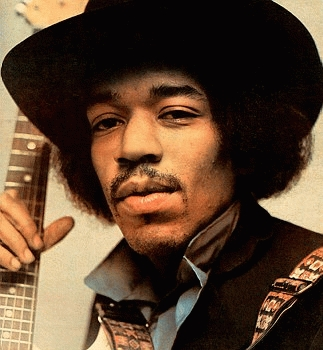

Born on November 27, 1942, in Seattle, Washington, Jimi Hendrix learned to play guitar as a teenager, and grew up to become a rock guitar legend who excited audiences in the 1960s with his innovative electric guitar playing. One of his most memorable performances was at Woodstock in 1969, where he performed "The Star Spangled Banner." Hendrix died in 1970 from drug-related complications, leaving his mark on the world of rock music and remaining popular to this day.